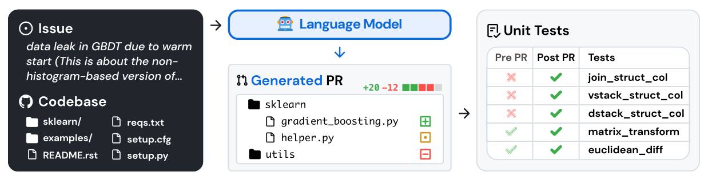

二、国内外研究现状
文本模态
视觉模态
CLI 智能体：操作系统
输入：终端输出 动作：Shell 命令

Terminal-Bench [Merrill et al., 2026]
Coding 智能体：构建软件
输入：代码与测试结果 动作：编写 / 运行程序

SWE-bench [Jimenez et al., ICLR 2024]
GUI 智能体：看屏操作
输入：屏幕截图 动作：点击 / 输入 / 拖拽

OSWorld [Xie et al., NeurIPS 2024]
文本模态：精确、高效、状态可读，单元测试即可验证奖励 ｜ 视觉模态：任何软件都能操作，看得见渲染结果与交互反馈
两类模态互补而非互替：真实数字工作需要在一条轨迹里同时用好文本与视觉